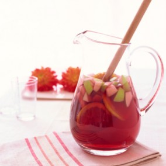

Recetas de cócteles para la noche.
Homepage
Our Clients
About Us
Privacy policy
Terms and Conditions
Photo gallery
Contacts
Welcome to Recetas de cócteles para la noche.
Siete cócteles sencillos (con y sin alcohol) para alegrar las .
Cócteles de Navidad 2021: recetas fáciles y originales .
Cócteles de una noche (y día) de verano | 7caníbales.com
5 Recetas de cocteles fáciles y divertidos para una noche de .
24 cócteles fáciles que puedes hacer en casa para no echar .
20 cocteles con alcohol para boda que les harán la boca agua
Cocteles para una Noche de Chicas - Kiwilimón
¡3 Cócteles fáciles y creativos para la noche de Halloween!
4 cócteles ideales para una noche de fiesta - VIX
7 tragos caseros para alegrar tu noche | Tragos faciles de .
5 Recetas de cocteles fáciles y divertidos para una noche de chicas - Revista Cosmopolitan | Cócteles faciles, Cocktails recetas, Cocteles
2021.06.18 21:28
<div class="mc_vtvc_th b_canvas"><div class="cico" style="width:234px;height:131px;"><div class="rms_iac" style="height:131px;line-height:131px;width:234px;" data-height="131" data-width="234" data-alt="Coctel Menta o Alexander´s Sister" data-role="presentation" data-class="rms_img" data-src="https://tse1.mm.bing.net/th?id=OVP.iTdQd4boBlhl6gEZKrZOGAEsDh" frameborder="0" allow="accelerometer; autoplay; encrypted-media; gyroscope; picture-in-picture" allowfullscreen>

Vivamus fermentum nibh
© Recetas de cócteles para la noche.. All rights reserved. | Photos by Fotogrph
Twitter
Pinterest
Google+
Pinterest